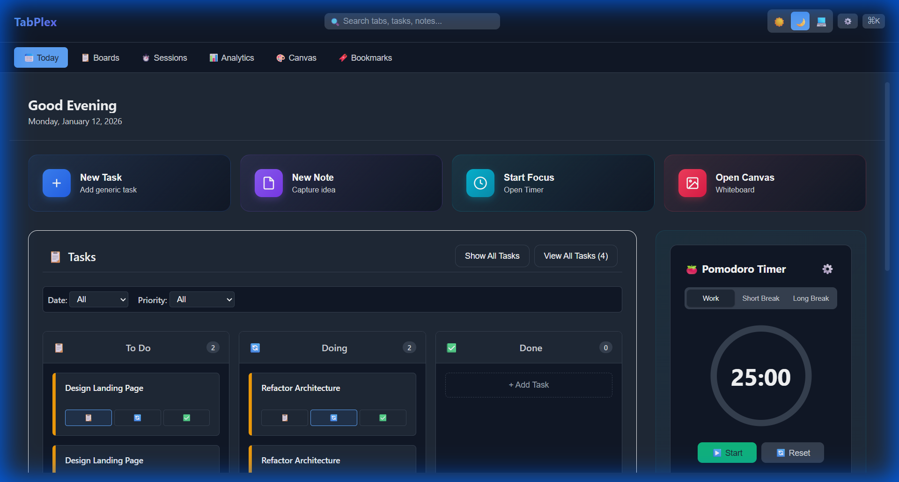
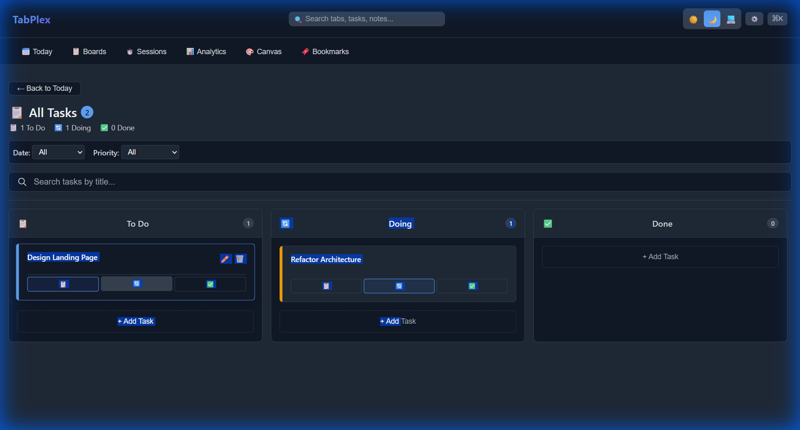
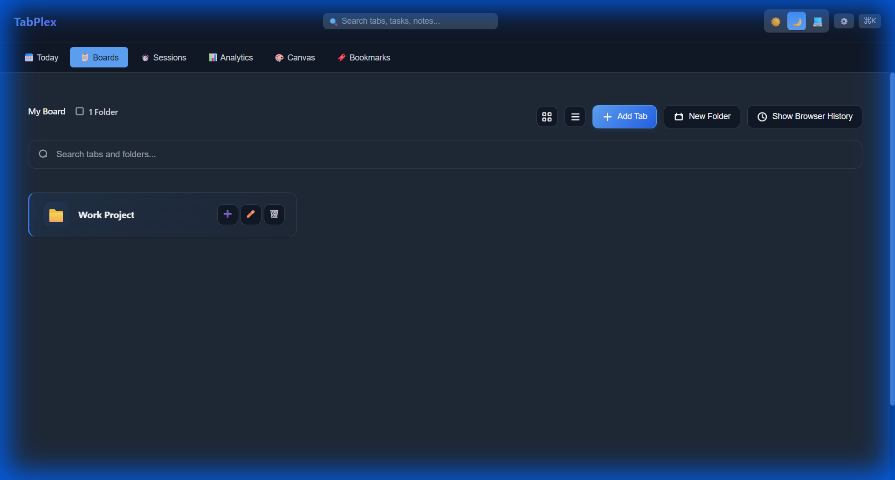

Stop drowning in tabs. TabPlex turns your chaotic browser into a powerful, organized workspace with Kanban boards, tasks, and focus tools.
Trusted by 10,000+ productivity enthusiasts

Everything you need to stay productive, right in your new tab.
Transform your to-do list into a powerful Kanban board. Drag and drop tasks, set priorities, and track progress without leaving your browser.

Group related tabs into project folders. Save sessions for later and declutter your mind instantly.

Built-in Pomodoro timer to help you stay in the flow and manage deep work sessions.
Capture ideas instantly with markdown support. Notes sync across your devices.
Your data stays on your device. Zero tracking, zero cloud dependencies.
Join thousands of users who have reclaimed their browser sanity.
Install TabPlex Free